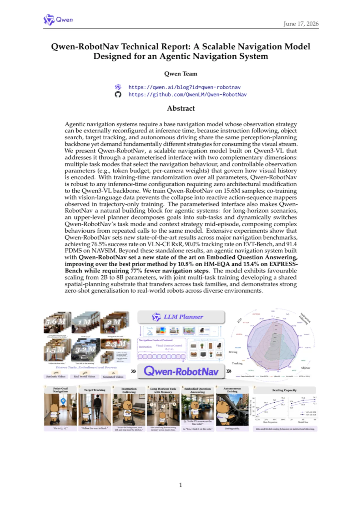
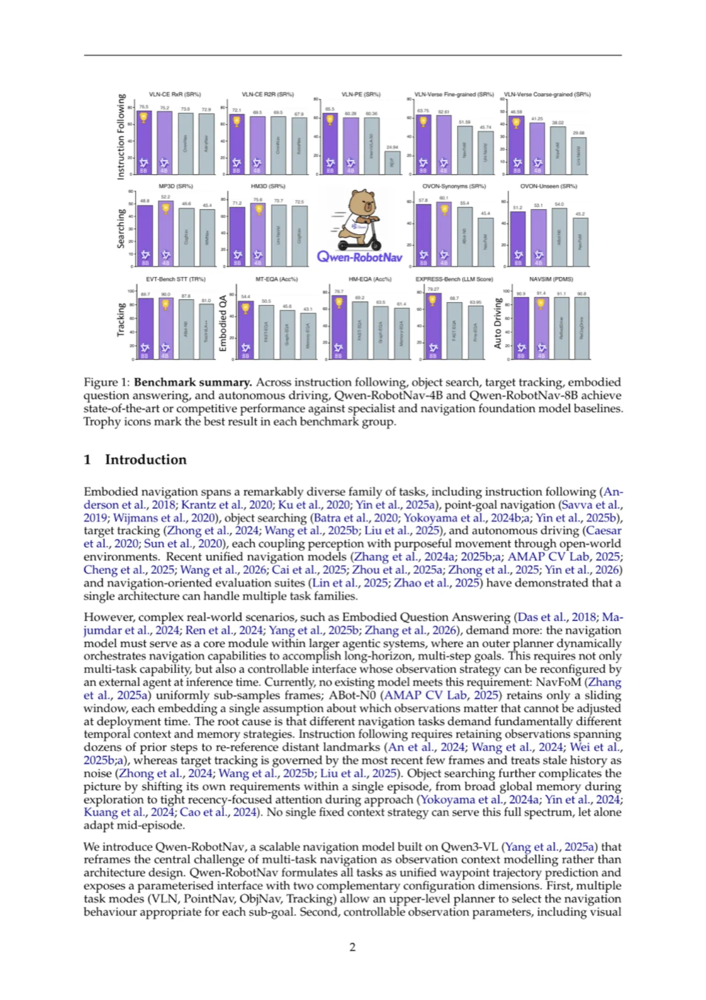
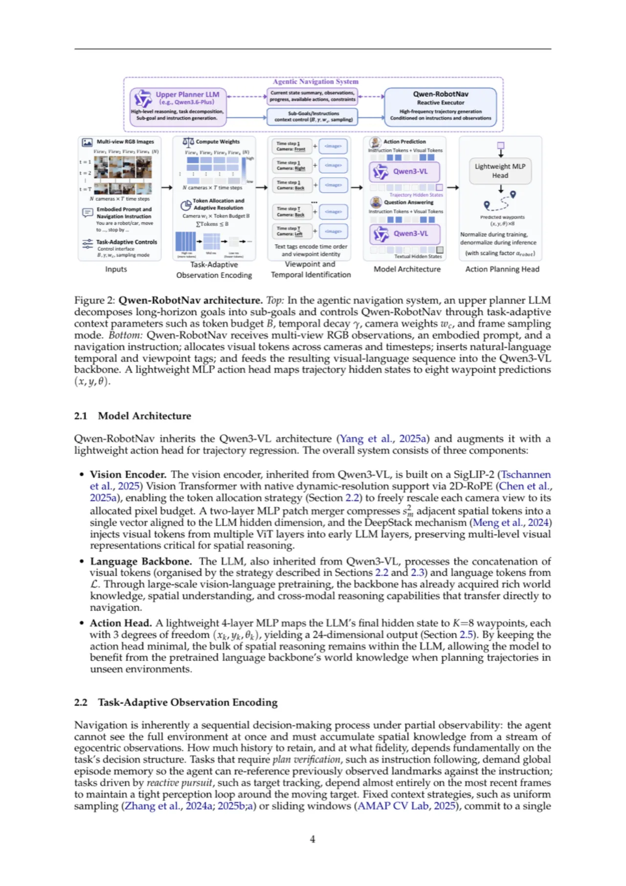
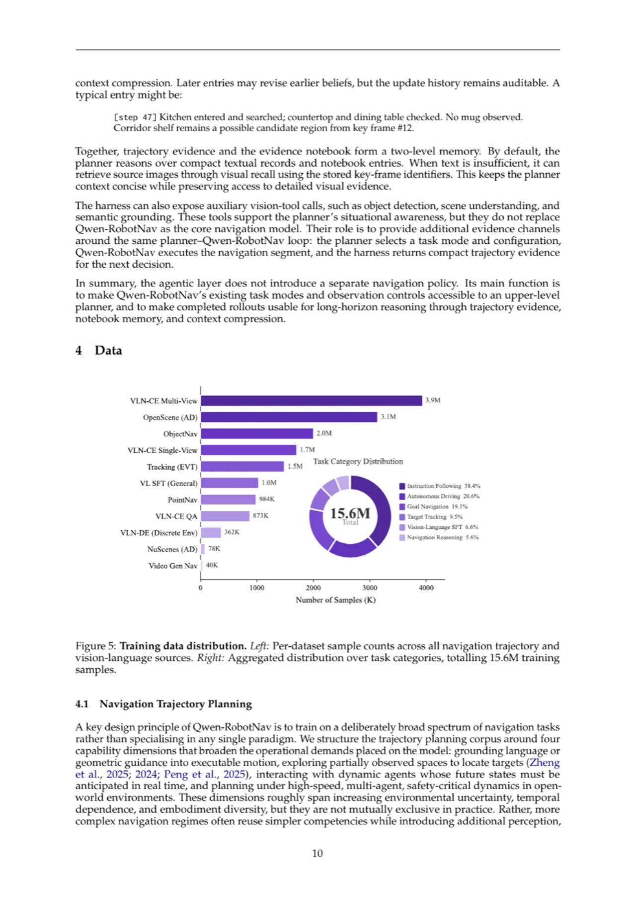
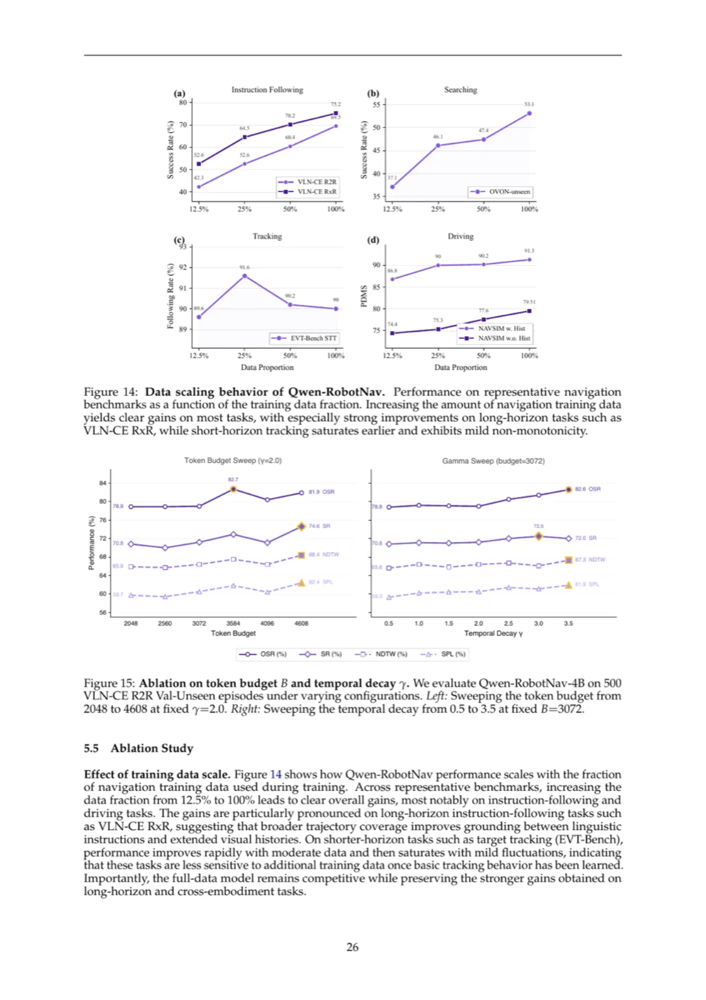

Qwen-RobotNav 基于 Qwen3-VL 构建，通过参数化观测编码接口统一处理指令跟随、目标搜索、目标追踪和自动驾驶等多类导航任务，无需推理时重新训练即可动态切换任务模式与观测策略。 在 15.6M 样本上联合训练后，模型在 VLN-CE、EVT-Bench、HM3D、NAVSIM 等主流基准均达到最新最优水平； 结合上层 LLM Planner 构建的智能体导航系统，在三项 Embodied Question Answering 基准上同样刷新记录。
具身导航跨越了极为多样的任务家族——指令跟随、目标导航、目标追踪、自动驾驶——它们共享同一套感知-规划骨干， 却对如何消费视觉流有着根本不同的策略需求。 现有统一导航模型（如 NavFoM、ABot-N0）采用固定的观测上下文策略，无法在推理时被外部代理重新配置； 不同任务需要截然不同的时间上下文：指令跟随需要数十步的全局历史以重新参考远端地标， 而目标追踪则几乎只依赖最近几帧。
"We reframe the central challenge of multi-task navigation as observation context modelling rather than architecture design."


Qwen-RobotNav 将所有导航任务统一为路径点轨迹预测，并通过两个正交维度的参数化接口暴露可配置的观测策略： （1）多任务模式（VLN / PointNav / ObjNav / Tracking）选择导航行为； （2）可控观测参数（视觉 token 预算 B、时间衰减 γ、per-camera 权重 wc、帧采样模式） 控制视觉历史编码方式。训练时对所有参数进行随机化，确保推理时无需任何架构修改即可适应任意配置。

导航是部分可观测下的序列决策，不同任务对历史帧的需求截然不同。 Qwen-RobotNav 通过时间权重函数 ωt = exp(γ · t/(T'−1)) 对各帧分配 token， 再结合 per-camera 重要性权重 wc 构建二维权重矩阵 W[t,c]， 最后用受约束分配算法在预算 B（2048–4096）内按比例分配每张图片的像素分辨率。 γ=0 对应均匀采样，γ 越大越向最近帧集中——当 γ=2 时，最新帧获得最旧帧约 7.4 倍的 token 预算。 训练时所有参数独立随机采样，令模型对任意推理配置均具鲁棒性。
多相机、多时间步的视觉 token 在输入 LLM 前本质上是不可区分的。
Qwen-RobotNav 在每个时间步组前插入自然语言标签（如 Time step 1 Front View <image> Right View <image> ...），
完全依赖 Qwen3-VL 已有的词汇理解能力，无需额外参数或嵌入，同时保留了开放世界语言先验。
不同物理平台（室内移动机器人 vs. 自动驾驶汽车）通过系统提示中的自然语言前言区分：
室内机器人以 "Imagine you are a robot programmed for navigation tasks" 开始，
自动驾驶以 "Imagine you are a car programmed for autonomous driving" 开始。
支持新平台仅需定义新提示模板，无需任何架构修改。
训练目标为轨迹回归损失与视觉-语言对齐损失的组合： L = Ltraj + λ LVL（λ=1.0）。 语料库由 85% 导航轨迹数据和 15% 视觉-语言推理数据混合组成， 联合训练防止模型退化为纯反应式动作序列预测器，保持开放世界感知能力。 8B 模型以批量大小 256 共训练 2,816 H100 GPU 小时。

Qwen-RobotNav 作为可被外部调用的导航执行器暴露工具接口： Wi = nav_qwennav(Li, τi, Φi)， 其中 Li 为子目标指令、τi 为任务模式、Φi 为观测配置。 上层 LLM Planner（Qwen3.6-Plus）将长时任务分解为子目标并动态切换模式和配置； Navigation Harness 将每次导航执行结果压缩为轨迹证据记录（subgoal、progress、salient landmarks、key_frames）， 维护跨回合的证据笔记本，支持长时推理与上下文压缩。
评测覆盖视觉-语言导航（VLN-CE R2R/RxR、VLNVerse、VLN-PE）、开放词汇目标导航（MP3D、HM3D-OVON）、 主动视觉追踪（EVT-Bench STT）、具身问答（HM-EQA、MT-EQA、EXPRESS-Bench）和自动驾驶（NAVSIM、AlpaSim）五大类别， 与 NavFoM、ABot-N0 等导航基础模型及各专项方法对比。
| 方法 | R2R SR↑ | R2R SPL↑ | RxR SR↑ | RxR nDTW↑ |
|---|---|---|---|---|
| NavFoM（全景） | 72.1 | 61.7 | 64.4 | 65.8 |
| ABot-N0（全景） | 70.8 | 64.3 | 69.3 | – |
| AstraNav-World（全景） | 73.9 | 67.9 | 72.9 | – |
| Qwen-RobotNav-4B（全景） | 77.2 | 69.5 | 75.2 | 71.9 |
| Qwen-RobotNav-8B（全景） | 78.5 | 72.1 | 76.5 | 72.5 |
全景设置下，Qwen-RobotNav-8B 在 R2R 达到 72.1% SR 和 76.5% SR（RxR）， 分别超越 NavFoM 10.4% SR 和 ABot-N0 5.7% SR（R2R）。 单目设置下，Qwen-RobotNav-4B 在 R2R 达到 66.9% SR 和 60.5% SPL， 超越最强单目基线 DualVLN 2.6% SR 和 2.0% SPL。
| 方法 | MP3D SR↑ | HM3D v2 SR↑ | HM3D-OVON Seen SR↑ | HM3D-OVON Unseen SR↑ |
|---|---|---|---|---|
| CogNav | 46.6 | – | – | – |
| ABot-N0 | – | – | 55.4 | 54.0 |
| NavFoM | – | – | 45.4 | 45.2 |
| Qwen-RobotNav-4B | 52.2 | 75.6 | 57.7 | 53.1 |
| Qwen-RobotNav-8B | 48.8 | 71.2 | 56.1 | 51.2 |
HM3D v2 上，Qwen-RobotNav-4B 达到 75.6% SR，距离目标仅 1.72 m， 超越即便是基于 HM3D v1（更简单版本）的所有先前方法。 在 HM3D-OVON（开放词汇），Qwen-RobotNav-4B 仅使用单目前向摄像头便超越使用全景多视图的 ABot-N0， 在 Seen 和 Synonyms 两个划分上分别领先 2.4% 和 4.7% SR。
| 方法 | TR↑（追踪率） | CR↓（碰撞率） | SR↑（成功率） |
|---|---|---|---|
| TrackVLA++ | 81.0 | 2.10 | 86.0 |
| NavFoM | 80.5 | – | 85.0 |
| ABot-N0 | 87.6 | 8.54 | 86.9 |
| Qwen-RobotNav-4B | 90.0 | 6.40 | 77.4 |
| Qwen-RobotNav-8B | 89.7 | 5.70 | 78.6 |
Qwen-RobotNav-4B 以 90.0% TR 在所有方法中取得最高追踪率， 比 ABot-N0 高 2.4%、比 NavFoM 高 9.5%； 8B 版本碰撞率最低（5.70%）。成功率略低于专项追踪器（ABot-N0 86.9%）， 论文认为广泛多任务训练引入了更保守的停止策略——追踪行为与停止判断之间存在权衡。
| 方法 | HM-EQA Acc↑ | HM-EQA Steps↓ | MT-EQA Acc↑ | EXPRESS-Bench LLM Score↑ |
|---|---|---|---|---|
| FAST-EQA | 69.2 | 0.65 | 50.5 | 68.7 |
| Qwen3.5-Plus+QwenRobotNav-8B | 74.1 | 0.17 | 52.1 | 77.66 |
| Qwen3.6-Plus+QwenRobotNav-8B | 76.7 | 0.15 | 54.4 | 79.27 |
智能体系统在 EQA 三项基准全面超越现有方法。与 FAST-EQA 对比：HM-EQA +7.5 点，MT-EQA +3.9 点，EXPRESS-Bench +10.57 分， 同时导航步数减少 77%（0.65 → 0.15）。
| 方法 | NC↑ | DAC↑ | TTC↑ | PDMS↑ |
|---|---|---|---|---|
| NavFoM | 97.7 | 93.5 | 92.3 | 84.3 |
| ReCogDrive | 97.9 | 97.3 | 94.9 | 90.8 |
| ReflectDrive | 97.7 | 99.3 | 93.5 | 91.1 |
| Qwen-RobotNav-4B | 99.8 | 90.9 | 98.5 | 91.4 |
| Qwen-RobotNav-8B | 99.8 | 96.9 | 98.2 | 90.9 |
Qwen-RobotNav-4B 在 NAVSIM 达到 91.4 PDMS，超越 NavFoM 7.1 分； NC（99.8）和 TTC（98.5）均领先所有方法，显示出强安全性约束遵从能力。

消融结论：保留更多视觉上下文整体有益，但超出某阈值后分配不当会带来收益递减； 较大 γ 使模型更聚焦近期帧、增强场景解析能力，但代价是丢失早期历史上下文， 对严格依赖全局历史的成功率指标产生轻微负面影响。
Qwen-RobotNav 在四足机器人（Unitree Go2）上实现零样本迁移： 在真实展览大厅（21.78 m 路程）通过纯自然语言指令完成跨区域导航， 并在接到「倒退」指令时精确沿原路返回起始位置。 在室内公寓场景，模型在卧室、客厅、浴室间多房间穿行，响应精细空间指令。 推理时延：远程服务器 196 ms（5.1 Hz），板端 TensorRT 加速 204 ms（4.9 Hz）。
EVT-Bench 上追踪率（TR）最高，但成功率（SR）低于专项追踪器 ABot-N0（77.4% vs. 86.9%）和 TrackVLA++（77.4% vs. 86.0%）。 论文原文："We hypothesise that the broader multi-task training of Qwen-RobotNav introduces a trade-off where the model maintains tighter following behaviour (superior TR) while being more conservative in declaring episode success."
HM3D-OVON 上，Qwen-RobotNav 的 SPL 低于 NavFoM 和 ABot-N0，反映骨架探索训练轨迹倾向于逐房间系统性搜索（提高目标发现率），但路径更长。 论文原文："The lower SPL of Qwen-RobotNav relative to NavFoM and ABot-N0 reflects a reach-first exploration behaviour."
在 AlpaSim（PhysicalAI-AV NuRec 数据集）零样本评测中，Qwen-RobotNav-4B/8B 的 AlpaSim Score（0.15/0.17） 显著低于专项模型 Alpamayo-R1-10B（0.72），Off-Road Rate 也更高。 这表明跨场景迁移至专用封闭循环自动驾驶仍存在显著差距，需要领域适应。
论文原文："We believe this strategy could be further improved by a more principled token allocation algorithm." 当前 token 预算分配基于经验启发式，并非最优；消融实验也显示过大预算带来收益递减甚至略有下降。